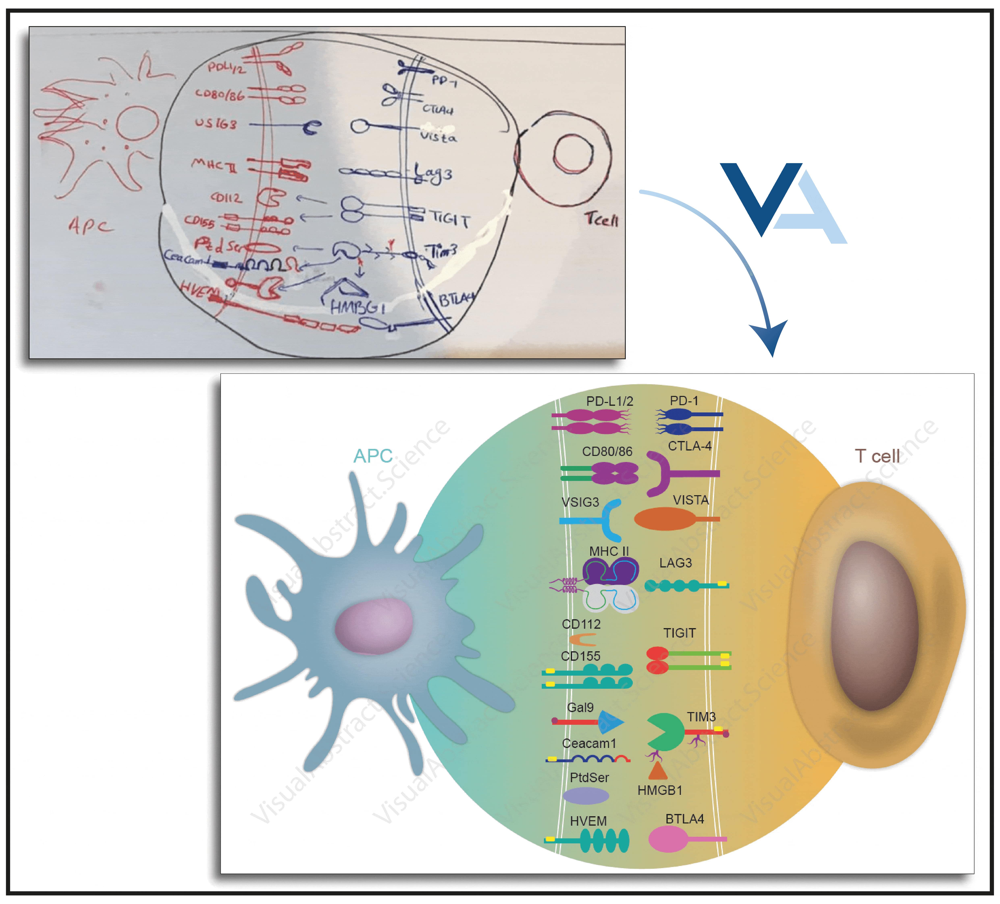

VisualAbstract.Science
Get Full-text
The Impact of Visual Abstract Design on the Acceptance Rates of Scientific Manuscripts in High-Impact Journals: A Professional Design Solution
Visual Abstract
graphical Abstract
Visual Abstract Science
Visual Abstract Service
Visual Abstract design
Visual Abstract creator
Visual Abstract maker
graphical Abstract Science
graphical Abstract Service
graphical Abstract design
graphical Abstract creator
graphical Abstract maker
scientific illustration
scientific illustration service
how to make a visual abstract
how to make a graphical abstract
Visual abstract software
Visual abstract for review paper
graphical abstract software
graphical abstract for review paper
hand drawing to scientific illustration
Send Your Hand-drawing to:
In Brief
Visual abstracts (VAs) are gaining importance in scientific publishing. VAs can improve understanding, accelerate detailed information transfer, and boost engagement, potentially leading to more visibility and citations. However, creating effective VAs can be challenging due to lack of time, profession or both. Our visual abstract design service offers a solution, providing original and detailed visual abstracts with only submitting a hand-drawing.
Highlights
Visual abstracts (VAs) are increasingly used in scientific publishing to improve clarity and visibility.
Journals benefit from increased dissemination, enhanced impact factors, and potentially faster peer review processes due to VAs.
Challenges in VA creation include design complexity, lack of profession and time constraints.
Our professional VA design service can address these challenges by VA designers familiar with different scientific subjects and journal guidelines.
We are dedicated to delivering high-quality, original visual abstracts to the scientific community at highly competitive and affordable prices. (Est. 2020)
https://www.visualabstract.science - Contact us: admin@visualabstract.science